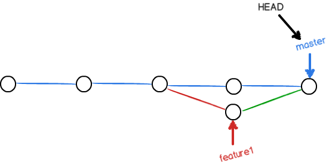

人生不如意之事十之八九，合并分支往往也不是一帆风顺的。
准备新的
feature1
分支，继续我们的新分支开发：
$ git checkout -b feature1
Switched to a new branch 'feature1'
修改 readme.txt 最后一行，改为：
Creating a new branch is quick AND simple.
在
feature1
分支上提交：
$ git add readme.txt
$ git commit -m "AND simple"
[feature1 75a857c] AND simple
1 file changed, 1 insertion(+), 1 deletion(-)
切换到
master
分支：
$ git checkout master
Switched to branch 'master'
Your branch is up-to-date with 'origin/master'.
Git 还会自动提示我们当前
master
分支与远程的
master
分支是同步的。
在
master
分支上把 readme.txt 文件的最后一行改为：
Creating a new branch is quick & simple.提交：
$ git add readme.txt
$ git commit -m "& simple"
[master 400b400] & simple
1 file changed, 1 insertion(+), 1 deletion(-)
现在，
master
分支和
feature1
分支各自都分别有新的提交，变成了这样：
这种情况下，Git 无法执行“快速合并”，只能试图把各自的修改合并起来，但这种合并就可能会有冲突，我们试试看：
$ git merge feature1
Auto-merging readme.txt
CONFLICT (content): Merge conflict in readme.txt
Automatic merge failed; fix conflicts and then commit the result.
果然冲突了！Git 告诉我们，readme.txt 文件存在冲突，必须手动解决冲突后再提交。
git status
也可以告诉我们冲突的文件：
$ git status
# On branch master
# Your branch is ahead of 'origin/master' by 2 commits.
#
# Unmerged paths:
# (use "git add/rm <file>..." as appropriate to mark resolution)
#
# both modified: readme.txt
#
no changes added to commit (use "git add" and/or "git commit -a")
我们可以直接查看 readme.txt 的内容：
$ cat readme.txt
Git is a distributed version control system.
Git is free software distributed under the GPL.
Git has a mutable index called stage.
Git tracks changes of files.
<<<<<<< HEAD
Creating a new branch is quick & simple.
=======
Creating a new branch is quick AND simple.
>>>>>>> feature1
Git用
<<<<<<<
，
=======
，
>>>>>>>
标记出不同分支的内容，我们修改如下后保存：
Creating a new branch is quick and simple.再提交：
$ git add readme.txt
$ git commit -m "conflict fixed"
[master 59bc1cb] conflict fixed
现在，
master
分支和
feature1
分支变成了下图所示：

用带参数的
git log
也可以看到分支的合并情况：
$ git log --graph --pretty=oneline --abbrev-commit
* 59bc1cb conflict fixed
|\
| * 75a857c AND simple
* | 400b400 & simple
|/
* fec145a branch test
...
最后，删除 feature1 分支：
$ git branch -d feature1
Deleted branch feature1 (was 75a857c).
工作完成。
当 Git 无法自动合并分支时，就必须首先解决冲突。解决冲突后，再提交，合并完成。
用
git log --graph
命令可以看到分支合并图。